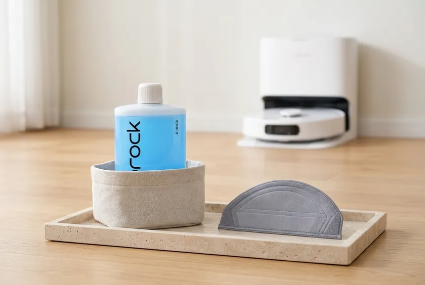
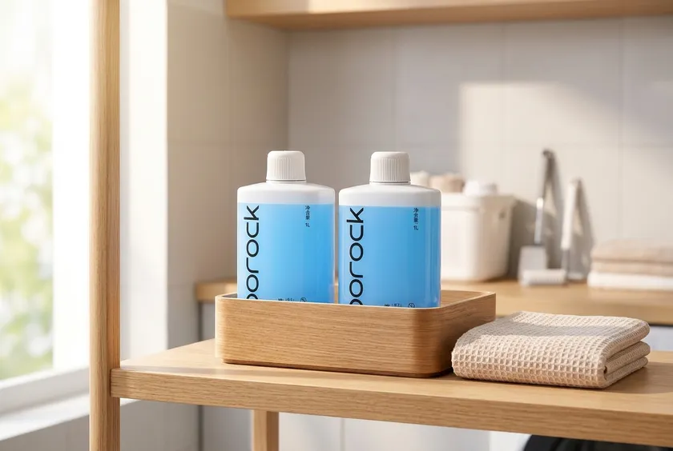

로보락 (Roborock)
로보락 전용 세제 1L 리필 전, 자동 세제통과 정수통 모델 구분하기
글·구성: 제이상점 · 기종별 1:1 호환 실물 점검 · 교체 주기 비교표 · 스마트스토어 패키지 안내

핵심 관리 · 선택 체크포인트
- 로보락 S10·S9·S8 시리즈 도크에 전용 클리너를 보충할 때는 자동 세제 카트리지에 원액을 채우는 기종인지, 정수통에 라벨 안내 비율대로 희석해 넣는 기종인지 먼저 구분해야 합니다.
- 로보락 정품 세제 1L 두 가지 옵션과 선택 포인트: 소모품 세트와 별개로 세정액만 먼저 떨어졌을 때 비교하기 좋은 2가지 옵션 기준입니다.
- 주방세제나 일반 생활 세정제를 임의로 넣으면 거품 과다나 배관 잔류물 원인이 될 수 있으므로 기종 안내에 맞는 전용 클리너만 사용하는 편이 안전합니다.
- 직사광선을 피한 보관 자리와 배송 일정을 챙겨 두세요: 수령 후에는 병 라벨의 지원 범위와 주의사항을 한 번 읽고 서늘한 수납장에 세워 보관해 주세요. 보충용 클리너가 필요하다면 로보락 정품 세제 1L 1병·2병(복수구매할인) 상세 옵션에서 현재 구성을 살펴보실 수 있습니다.
- 중국 구매대행·해외직배송으로 발송되는 상품인 만큼, 세제통 바닥이 보이기 전에 미리 주문 일정을 잡아 두면 끊김 없이 물걸레 관리를 이어갈 수 있습니다.
실물 부품 디테일 · 관리 구성 이미지


부품 규격 · 점검 기준표
| 선택 옵션명 | 용량 구성 | 권장 확인 사항 |
|---|---|---|
| 용량 1L-1병 | 1L 본품 1병 | 도크 내 별도 세제 카트리지 유무와 공식 설명서의 투입구 위치를 먼저 대조 |
| 용량 1L-2병(복수구매할인) | 1L 본품 2병 묶음 | 물걸레 청소를 자주 돌려 한 병이 비기 전 예비분을 상비해 두려는 가정 |
💡 교체 주기가 겹치는 필터·브러시·물걸레·더스트백은 단품 배송비를 여러 번 내기보다 로보락 세제 기간별 세트(3개월·6개월·1년)로 미리 구비해 두면 물세척 후 24시간 교대 건조까지 끊김 없이 관리할 수 있습니다.
자주 묻는 질문 (FAQ)
Q. 로보락 전용 세제 1L의 용량 1L-1병 규격과 관리 기준은 무엇인가요?
A. 1L 본품 1병 규격을 사용하며, 도크 내 별도 세제 카트리지 유무와 공식 설명서의 투입구 위치를 먼저 대조 기준으로 점검·교체하면 청소 효율을 안정적으로 유지할 수 있습니다.
Q. 로보락 전용 세제 1L의 용량 1L-2병(복수구매할인) 규격과 관리 기준은 무엇인가요?
A. 1L 본품 2병 묶음 규격을 사용하며, 물걸레 청소를 자주 돌려 한 병이 비기 전 예비분을 상비해 두려는 가정 기준으로 점검·교체하면 청소 효율을 안정적으로 유지할 수 있습니다.
제이상점 1:1 검수 추천 패키지 · 구매 안내
☑️ 주문 전 확인해 두면 좋은 제이상점 안심 포인트
· 기종별 1:1 전용 규격 검수: 모델명·연식에 맞는 호환·정품 구성을 검수해 오주문 불안을 줄였습니다.
· 해외직배송 미리 주문 팁: 중국 구매대행·해외직배송 상품이므로 마지막 여분 1개를 꺼내 쓰는 시점에 개인통관고유부호와 함께 여유 있게 주문해 두시면 훨씬 경제적인 비용으로 끊김 없이 교체하실 수 있습니다.
· 기종별 1:1 전용 규격 검수: 모델명·연식에 맞는 호환·정품 구성을 검수해 오주문 불안을 줄였습니다.
· 해외직배송 미리 주문 팁: 중국 구매대행·해외직배송 상품이므로 마지막 여분 1개를 꺼내 쓰는 시점에 개인통관고유부호와 함께 여유 있게 주문해 두시면 훨씬 경제적인 비용으로 끊김 없이 교체하실 수 있습니다.
📖 더 많은 가정 내 사용 스토리와 상세 후기가 궁금하시다면
📱 네이버 블로그 모바일 원문 보기 ↗